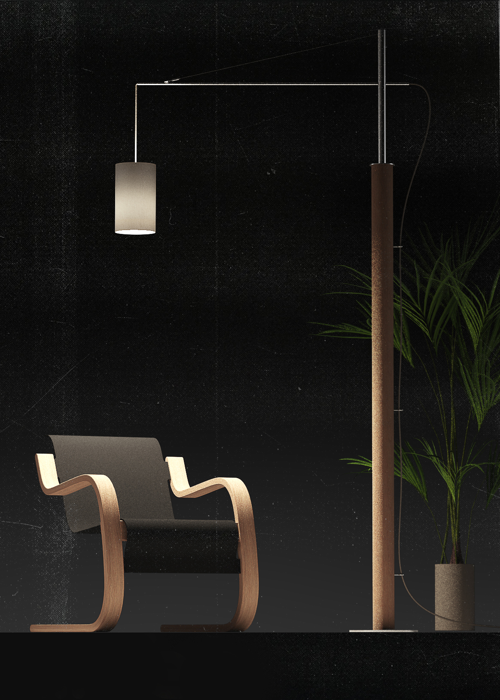
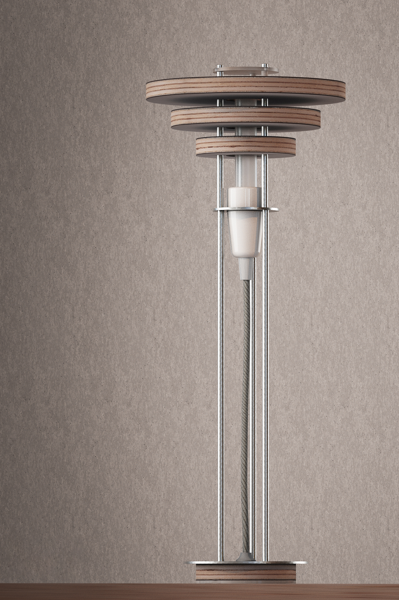
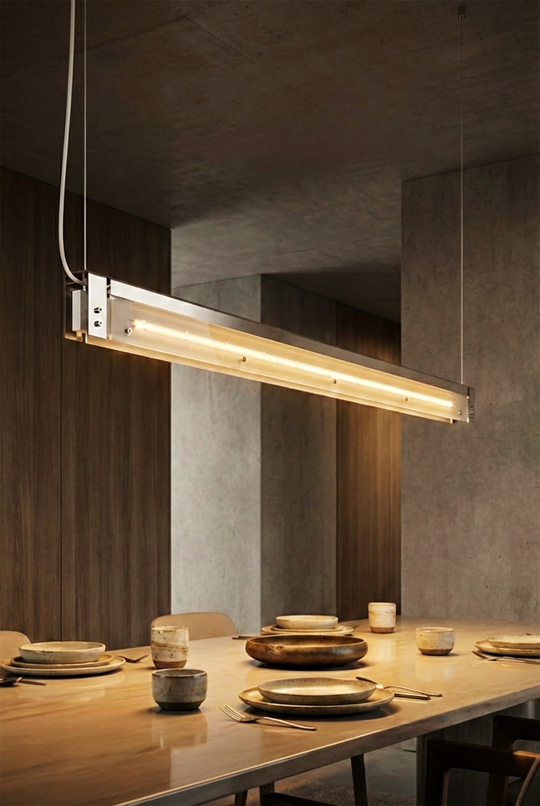

Lampada da tavolo a lice direzionabile. La struttura è caratterizzata da un'asta snodata in acciaio inox con meccanismi di serraggio a vista in finitura rossa, che fungono sia da elemento funzionale che estetico. Il paralume in lamiera di alluminio piegata direziona la luce in modo preciso, ottimizzando l'illuminazione per la lettura e il lavoro. Materiali: alluminio, acciaio inox, lamiera verniciata.
Lampada da terra con Sospensione
Un approccio ibrido all'illuminazione da terra. Questo progetto combina la stabilità e la robustezza di una base in acciaio inox con la leggerezza di un tronco tornito in legno. Il braccio orizzontale, stabilizzato da un sistema di tiranti in cavo d'acciaio, permette di sospendere il paralume in tessuto esattamente dove serve, creando una calda luce d'ambiente perfetta per le zone living o lettura. Materiali: Legno tornito, acciaio inox, tessuto.
Tavolino da caffè
Studio e realizzazione di elementi di arredo modulari. Il focus di questo progetto è la connessione strutturale tra i piani in legno multistrato fenolico e i supporti metallici. L'utilizzo di staffe realizzate in lamiera piegata e viteria a brugola a vista celebra l'aspetto tecnico e costruttivo dell'oggetto, senza nascondere la sua natura funzionale. Materiali: Legno multistrato, lamiera di acciaio inox.
Lampada a Morsetto da Lettura
Corpo illuminante minimale progettato per l'aggancio a testiere del letto o mensole. La lampada utilizza un sistema a morsetto con vite di serraggio a vista per un fissaggio sicuro e versatile. Il diffusore semi-sferico orientabile permette di direzionare il fascio luminoso con grande precisione. Un progetto che unisce estetica essenziale e flessibilità d'uso. Materiali: acciaio inox, alluminio, componenti termoplastici.
Orologio Digitale
Progetto di micro-meccanica e design del prodotto. La cassa dell'orologio è stata interamente progettata e realizzata in lamiera di acciaio inox piegata per ospitare un modulo elettronico digitale. L'estetica cruda e marcatamente industriale è accentuata dalla viteria a vista e dai pulsanti cilindrici sporgenti. Il morbido cinturino in pelle contrasta piacevolmente con il rigore geometrico e freddo del metallo. Materiali: acciaio inox, vera pelle.
Render
Modellazione 3D e rendering
Esplorazioni formali, studi di illuminazione e pre-visualizzazione di progetti futuri.
Lampada a sospensione
Lampada a morsetto (realizzata)
Lampada da tavolo
Concept Lampada da tavolo/2
Lampada da tavolo/3
Lampada a scorrimento su binari

Lampada da terra (realizzata)
Tavolino da caffè (realizzato) e lampada sospesa

Lampada da tavolo

Lampada a sospensione
Profilo
Alberto Costa
Industrial designer e grafico con base a Caldogno (Vicenza).
Industrial designer, fotografo e grafico con base a Caldogno (Vicenza).
Ho iniziato la mia attività come grafico e illustratore di libri per bambini, appassionandomi in seguito all'architettura e al design industriale. Specializzato nel settore dell'illuminazione, oggi mi occupo dell'intero iter progettuale: sviluppo progetti personali partendo da un'idea e arrivando al prodotto finito attraverso lo studio tecnico e la prototipazione, garantendo sempre massima coerenza tra visione estetica e fattibilità industriale.
 Alberto Costa
Alberto Costa